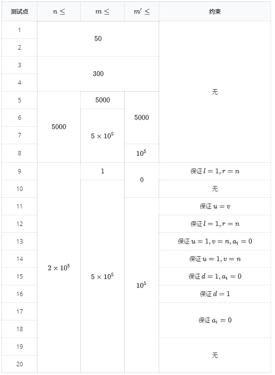

【样例解释】
节点个数为 $5$ 的简单路径只有 $1$ 条，权值和为 $5$，故第一次询问输出 $5$。
节点个数为 $1$ 的简单路径有 $5$ 条，每条权值和都是 $1$；节点个数为 $2$ 的简单路径有 $4$ 条，每条权值和都是 $2$，故第二次询问输出 $13$。
在将点 $1$ 和点 $2$ 的权值加 $2$ 后，$5$ 条节点个数为 $1$ 的简单路径权值和分别为 $3$、$3$、$1$、$1$、$1$，故第三次询问输出 $9$。
【数据范围与提示】
记操作 1（修改）的次数为 $m^\prime$。
对于全部数据， 保证 $n \leq 200000, m \leq 500000, m^\prime \leq 100000, 0 \leq a_i < 1000000007$
$1 \leq u \leq n, 1\leq v \leq n, 0 \leq d < 1000000007, l \leq r \leq n$。
对于每个数据点的详细规模与约定见下表。

 Comet OJ
Comet OJ